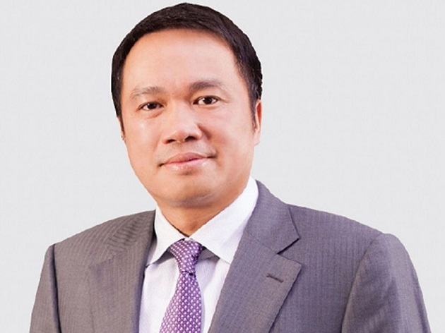
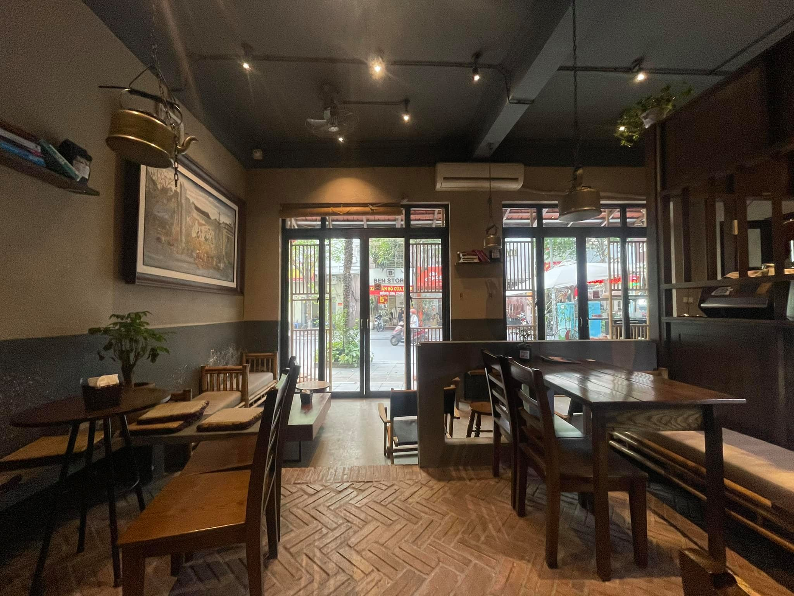
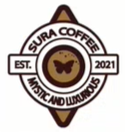

Lấy cảm hứng từ ông Đặng Lê Nguyên Vũ, người sáng lập thương hiệu cà phê Trung Nguyên, những người chủ sáng lập thương hiệu Sura Cafe ban đầu đi tìm mua hạt cà phê từ các nơi sản xuất ra các hạt cafe có chất lượng cao từ Buôn Ma Thuật, Đắk Lắk,.... Với số vốn ít ỏi đầu tiên cùng với sự quyết tâm, ý chí mãnh liệt quyết tâm đưa Sura cafe thành 1 thương hiệu vươn tầm thế giới như cà phê Trung Nguyên, vào năm 2003 ông Đặng Duy Nam - người sáng lập ra Sura cafe đã mở cửa hàng đầu tiên ở trên đường Đội Cấn,Hà Nội Một thời gian sau, quán chuyển về số 232 Hoàng Ngân, nơi mà bây giờ vẫn còn tồn tại, và họ cũng bắt đầu mua cà phê hạt trực tiếp từ các nông trại cũng như tự sản xuất loại cafe riêng biệt của quán.
Vào năm 2010, cửa hàng Sura cafe đầu tiên ra đời tại số 46 đường Đội Cấn. Ngay thời gian đầu khai trương, quán đã gây ấn tượng mạnh với khách hàng với thái độ làm việc chuyên nghiệp, được đào tạo bài bản, trong 2 tuần đầu tiên với chương trình đồng giá 5k cũng giúp cho khách hàng được trải nghiệm không gian, dịch vụ, chất lượng đồ uống và cũng là bước đệm để quán phát triển thêm sau này. Sau 2 năm từ khi cửa hàng Sura cafe xuất hiện, với tiêu chí " không ngừng đổi mới, không ngừng phát triển" cũng như có được sự ủng hộ từ các khách hàng, Sura cafe đã mở thêm 2 cửa hàng nữa ở các cơ sở 146 Hoàng Quốc Việt và 256 Lý Thường Kiệt. Tính tới nay Sura cafe đã mở rộng thêm các cơ sở ở Hà Nội và đặc biệt cũng đã mở ra các chi nhánh nhỏ hơn ở Đà Nẵng, Thành Phố Hồ Chí Minh.
 Ý nghĩa của tên Sura cafe là Super Arise thể hiện sự phát triển liên tục cũng như liên tục nâng cao các chất lượng sản phẩm, chất lương dịch vụ để luôn mang đến cho khách hàng những trải nghiệm thân thuộc, thoải mái nhưng không kém phần sang trọng. Các chuyên gia của AHA CAFE được yêu cầu đến tận các vườn trồng đất đỏ bazan ở độ cao tối thiểu 1.500m với khí hậu chênh lệch ngày đêm 15C-20C để tìm kiếm những quả cà phê với tỉ lệ chín trên 90% nhằm đảm bảo chất lượng nguyên liệu tốt nhất. Từ những hạt cà phê thượng hạng đó, bằng sự khắt khe và am hiểu sâu sắc, các nghệ nhân rang, xay giàu kinh nghiệm của chúng tôi mang đến chất lượng cà phê truyền thống thuần khiết hương vị tự nhiên và tuyệt đối không sử dụng bất cứ phụ gia hay chất bảo quản nào.